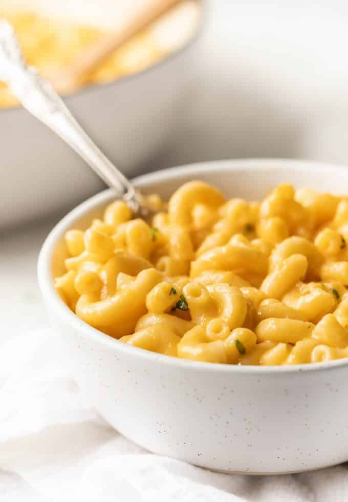

Macaroni and Cheese Recipe

Home
Description
Come, my child…come. I shall take you by the hand and take you where you need to go.
I shall show you the food that is solely responsible for my bones and tissues multiplying and growing at a young age.
It’s macaroni and cheese. And it’s the only food I consumed until I was about fourteen years old. Come…come, my child. I shall show you the way.
Ingredients
- 8 oz elbow macaroni
- 10 oz Cracker Barrel cheddar cheese
- 1 1/4 cup 2% milk
- 1 tbsp all-purpose flour
Steps
- Slice your cheddar cheese into chunks.
- Add 3/4 cup of milk and your cheese to a small pot. Heat on low heat, stirring often, until the cheese has completely melted. This can take 15-30 minutes depending on how hot your stove gets. It is a slow process but if you're not careful your sauce will curdle so give it lots of attention.
- Cook your macaroni in water according to package directions. Drain water. Set aside.
- Add your remaining 1/2 cup milk to a jar along with the flour. Put the lid on and shake vigorously so that you don't have any clumps of flour left.
- Once the cheese sauce looks creamy (no chunks of cheese are remaining), add the flour/milk slurry to it. Stir. Keep it on low heat for another 3 – 5 minutes then remove from heat and set aside. (Again, keep the heat low and watch it. You don't want the cheese sauce to curdle.)
- Salt & pepper the cheese sauce. Taste and add more if that's your preference.
- Pour your cheese sauce over the cooked macaroni and stir. Voila! You have officially mastered a perfect macaroni & cheese.